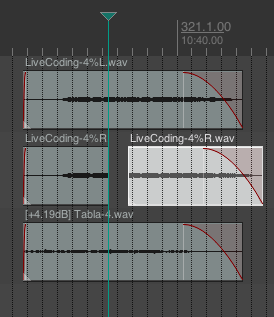
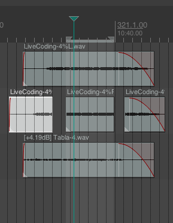
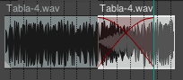
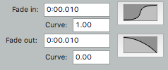
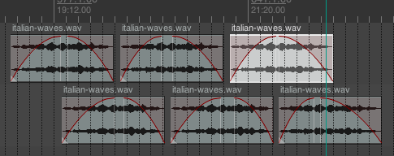
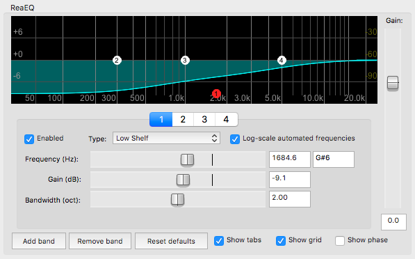
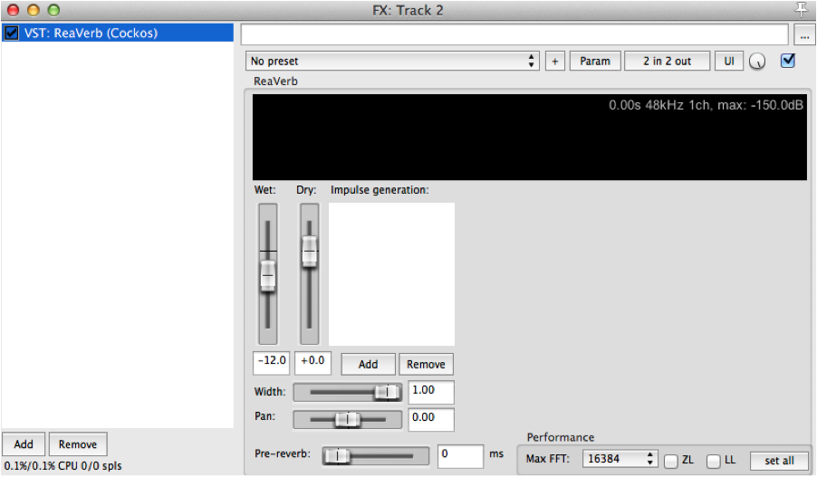

MEDIAART 2G03: Practice #4
Practice #4: apply editing, effects, and mixing to assemble sounds in iteratively improved compositions/designs
Notes
Before attempting to complete a practice submission for this practice, in your tutorial, make sure you've thoroughly reviewed my notes about the following two topics (this material, together with the tutorial instructions, is also the basis of the sections of the in-term and final exams about this practice):
- reading: The spectrum (sound as mixed frequencies) and filters
- reading: Reverberation and Aural Architecture
Goal
To transform source recordings by applying fades with specific shapes (including long ones), filters (EQ), Schroeder and convolution reverb.
Purpose
In this area of technical practice, we are exploring what are perhaps the most common transformations applied to sound sources in DAW projects, across a wide range of genres/formats. Indeed, in "real-world" DAW projects it is not uncommon for every track, or almost every track, to have careful attention to longer fade shapes, some kind of filters/EQ that have been applied, and some kind of artificial reverberation that have been applied. One can explore these techniques for a whole lifetime...
Requirements/Specifications
For a submission to receive credit for demonstrating this practice it needs to meet ALL of the following requirements:
- The submission should be a ZIP archive containing a clearly identified rendered WAV file
- The rendered WAV file must be rendered at a sample rate of 48000 Hz and a bit depth of 24 bits (see the instructions for practice #1 for a refresher)
- The rendered WAV file must demonstrate the use of crossfades and fade shapes to explore indefinitely extending an environmental/ambient sound
- The rendered WAV file must demonstrate the use of filters/EQ to dramatically alter the spectrum of source sounds (e.g. make them very dark/muffled, or very bright, etc)
- The rendered WAV file must demonstrate the use of either/both convolution reverb and/or Schroeder reverb (the effect of the reverb must be very clearly audible in the result)
The most efficient way to complete this will be during your assigned tutorial section. Don't hesitate to ask the instructor or teaching assistant for help if anything is unclear to you - but also don't hesitate to explore the software, try things out, and teach yourself! Detailed instructions for how to achieve the above continue below.
Detailed Instructions
Part 1 of 3: Crossfades, Long fades, extending ambient sounds
- To do this first part of the tutorial, we'll need some longer field recordings to work with. You are welcome to use your own longer field recordings, if you have them at hand, or you are welcome to download (from "Audio Resources" on Avenue) field recordings there (I recommend the ones called "italian-waves" or "birds").
Now, let's take notice of a few more common and extremely useful editing operations in Reaper.
2a. Splitting an audio region at a point in time: Click in the scrubber at the top to position Reaper's cursor so that it is somewhere in the middle of your imported audio region. Now click on the audio region so that it is highlighted (so that it "gets the focus). Now press S (for "split"). The focus will shift to the second half of your audio region. You've cut the region in two and can now move the two "halves" around separately. Each half can have its own fade in and fade out (click and drag near the top left and top right of the region, like we did in the first tutorial), you can move the left and right trims on each region, and you can reduce the level (and thus the loudness) of each region independently as well. The following image shows what it might look like after splitting a region and dragging one of its halves to the right:

Now this is important to realize: after splitting an audio region, you can take one of the halves and "get back" all of the original audio just by moving the left and/or right trim controls! An audio region is just a "reference" to an audio file, like an "instruction to play back that file in a certain way". So when we split an audio region all we are doing is taking one instruction to play back an audio file somewhere and turning it into two instructions (which we can then continue to edit and change).
Undo your work (press Cmd-Z on Mac, Ctrl-Z on Windows) until you are back at a single audio region in your project, before continuing with the next step
2b. Splitting an audio region around an "area" in time: Click and drag in the scrubber at the top to outline a "time selection" within/inside the time of your audio region. Click on your audio region so that it is highlighted. Now press shift-S (which again stands for "split"). Now you should have three independent audio regions - one corresponding to the time selection you made, one with whatever was in the region before that time selection, and a third region with whatever was in the region after that time selection. This way of splitting a region is particularly useful for "editing out" (ie. removing) a small section of audio. Just as with the other method of splitting, each of the three audio regions that result from the split are independent - you can work with the trim, fade and level controls separately on each region.

Undo your work (press Cmd-Z on Mac, Ctrl-Z on Windows) until you are back at a single audio region in your project, before continuing with the next step.
2c. Copying audio regions: Hold down the Cmd key (on Mac) or the Ctrl key (on Windows) and then click and drag on your audio region, letting go somewhere else in a track (for example, further to the right/later). You should get a second copy of the audio region. Just as with the splitting operations practiced earlier, this new audio region is an independent audio region from the original. We could get similar results by selecting an audio region, copying it to the clipboard, and then pasting it at the position of the cursor, but dragging with Cmd/Ctrl is definitely faster (the copy and paste method is still useful, though, for when you are copying a region to a very different place in time).
Undo your work (press Cmd-Z on Mac, Ctrl-Z on Windows) until you are back at a single audio region in your project, before continuing with the next step.
- Editing out a portion of a field recording with a crossfade: Now we'll try to remove a portion of a field recording. Identify a moment to try to remove. Highlight it by making a time selection around that moment (click and drag in the scrubber area near the top) and then press shift-S to break it into 3 regions. Now delete the middle one, and as a first attempt (not the final method!) move the first and third regions so that they touch but don't overlap (like a "jump cut" in video). Listen to this. When you listen to it, the immediate jump from the end of the region before the time selection to the beginning of the region after, will probably sound very abrupt and unnatural! What we probably need to do instead is crossfade the "before" region and the "after" region by overlapping them slightly, with one fading out as the other fades in. If you slide one of the two regions into the other, on the same track, Reaper will automatically create a crossfade so that one fades out in exactly same time as the other fades in:

Experiment with different lengths of crossfade by overlapping the two regions by different amounts, listening every time. Are you able to create a seamless effect using some length of automatic crossfade?
While sometimes it is possible to get the desired effect with these automatic crossfades, sometimes it is not. It is a bit of an unnecessary constraint to have the fade in of the second region start at exactly the same time the fade out of the other starts. Often, we will be able to get more refined results - especially with field recordings that can have many complex sources audible within them - if the fade out and the fade in are independently controlled. To do this, we will have to do the crossfade "manually". Create a second track in the project (Track: Insert New Track) and drag it to be just under your first track. Now drag you second audio region onto this second track. There will be no automatic crossfade anymore - but you can fade out the first region and fade in the second region any way you like. This is a much larger space of possibilities to explore - often the most amazing audio work is created by careful listening and trying out possibilities from a very large space of possibilities like this. In the next step, we'll also need to use this manual crossfade structure (with two tracks) also.
- Long fades: Continuing with the work from the previous step (no need to undo), make it so that the two regions you are working with are overlapped a lot in time (at least 10 seconds of overlap, with one fading out while the other fades in).
Now experiment with changing the "shape" of your fades in and out - this can be controlled from the top right area of the "View: Media Item Properties" dialog (ight click on an imported audio region and select Item Properties from near the top of the right-click menu, or left click on the imported audio region and pick Item: Item Properties from the menus at the top). Click on the displayed shapes to pick new shapes, and you can experiment with entering different numbers between 0 and 1 for the curve parameters as well. Experimenting with different fade shapes is especially critical for long fades, within which our ears are able to be quite sensitive to variations in the overall level of this "full-spectrum" audio. Long fades completed without using this extra level of control over the shape of the fade often sound "too sudden" (during the first half of the fade not enough change in level, then suddenly a quite drastic change in level over the second half of the fade). Notice how different fade shapes sound by making changes and listening repeatedly. Note that results will be quite different with different underlying sounds.

Note that you can use cross-fades to extend sound sources indefinitely (particularly recordings of long "ambient" soundscapes). You would use two tracks like we've been doing, make lots of copies of the audio region and "ping-ping" back and forth between the two tracks, with carefully shaped fades in and out on each region.

Part 2 of 3: Applying filters/EQ to audio recordings
-
In the second part of this tutorial, you could continue to work with the field recordings from the first part, or you could import other different sounds onto different/new tracks of your project. Whatever works.
-
After you've got some sounds to work with in your Reaper project, we'll add an "Equalizer" or "EQ" (a bank of filters configured to work together with a common interface) and experiment with how this lets us change the "colour" of the sound. Click on FX on one of the tracks of your project and add a VST: ReaEq effect to the effects chain for that track.
-
Low shelf filter: First let's experiment with a "low shelf filter". If you grab on the "1" you can move it around to create different shapes of attenuation across the lowest frequencies. Experiment with different shapes of the low shelf filter. For example, you could remove a lot of the low frequency content in your material with a shape like this:

Note: It is quite common working with environmental recordings to reduce some of the low frequency content as a way of making distant traffic noise, urban hum, etc less apparent. Exactly how much to reduce and with what shape is something to determine by ear - by listening repeatedly and making adjustments until it "sounds right". For this reason it is useful to use Reaper's looping capabilities in this kind of work. Click and drag in the "scrubber" near the top to create a loop area, then turn on looping playback down where the playback controls are:
-
High Shelf Filter: Put the low shelf filter ("1") back close to where you found it, and experiment with the "High Shelf Filter" - "4". This is, unsurprisingly, the opposite of the low shelf filter. Drag the 4 left and downwards to remove a lot of the recording's high frequencies. It is common to do this gently with environmental recordings, as condenser microphones (such as the microphones built in to the H4N portable recorders) often have a tendency to exaggerate high frequency content. But don't do this adjustment automatically or mechanically - listen closely and repeatedly to the sounds and find a setting that "sounds right" without sounding like a drastic change to the original.
-
Band Pass/Reject filters: Put the high shelf back close to where you found it, and experiment with one of the two "band pass/reject" filters (the "2" or the "3") that appear in the middle of the ReaEQ's spectrum display. These filters give you the ability to boost or reduce the energy in the area around a given frequency. Notice how when you click on one of these filters you also get a "bandwidth" control below (one of the sliders). This corresponds to the parameter Q discussed in the textbook. As you increase the bandwidth the filter gets less specific to a given frequency (lower Q). As you decrease the bandwidth the filter gets more specific. There are no hard and fast rules here, however, in gentle, corrective work with audio files, it is common to use low Q filters (high bandwidth) because very narrow (very high Q, very low bandwidth filters) can make things sound a bit unnatural (for exampling, introducing a subtle or not-so-subtle "ringing" sensation). Experiment with what these filters let you do - for example, you may be able to emphasize a particular source within your sound, or a particular aspect of the sound by boosting or cutting with these filters in the middle of the spectrum.
-
As a final step in this exploration of filters, "EQ" your sound by using the low shelf, the high shelf, and two band pass/reject filters all together. You have lots of variables at your disposal when you do this so be systematic. One strategy would be to follow the order we followed in presenting these filters above: first clean up the low frequencies, getting rid of unwanted traffic noise, rumble, etc; then adjust the high frequencies gently; then use band pass/reject filters in the middle of the spectrum to see if they bring out something nice (or correct something less nice) about the original. It is very common in audio practice for every track of a project to have carefully designed EQ, and it is often easier to combine sounds (and have them be separated and understood by the listener) when they have been carefully EQed.
Part 3 of 3: Apply Schroeder and/or convolution reverb to a recording
-
For the final part of this tutorial, you'll have an easier time hearing the results if you can work with a relatively short, relatively "dry" (i.e. something that doesn't already sound very reverberant) sound. It is more difficult to hear the effect of an artificial reverb if it interacts with reverberation cues that are already in the material. This is another reason to do super-clean, ultra-dry recordings in the studio: this way you gain the flexibility to convincingly place those sounds in any number of virtual environments later on... So start by getting something like this from your own collection of recordings, or by finding something from freesound.org (and taking note of its specific license terms).
-
Import the sound into a your Reaper project and verify that playback is working well.
-
Let's experiment with convolution reverb first. This will require the use of a recorded "impulse response" that models the reverberation in a space (likely made by recording the effect of a sharp crack, pop, or impulse in a real-world space), so start by downloading and unpacking a collection of suitable impulse responses (you'll see one labelled "royalty free impulse responses" on Avenue under "Audio Resources" - it's a ZIP file that when unzipped contains a big collection of different WAV file impulse responses).
Note that you whatever impulse responses you are going to use should be copied into your working project folder - in this way if you move the project folder to a different location on your computer, or to a different computer, all of the information necessary to render your project will be there.
- Next, add a convolution reverb to the track that has your imported sound by clicking on the FX button for that track and adding a VST: ReaVerb plugin. Then, in the ReaVerb plugin, click on Add: File under Impulse generation and select one of the impulse responses you downloaded in the previous step (again, these should be in your project folder so they can move around with your project).

Verify that the reverb is working (perceptible) and experiment with the main parameters: mix (wet and dry controls), predelay (called “pre-verb” in ReaVerb) and width. Find a setting that you like (for the moment). If you like, try out some different impulse response files to get a sense of alternate possibilities. If you can't hear the effect of the reverb clearly, don't hesitate to ask for help!
- Now let's try a similar thing but using a Schroeder reverberator (based on a network of filters instead of a recorded impulse response). Add another track to your project, and put a dry sound source on it (at a different time than your work in section C above, so that when you render we'll be able to hear two different reverbs being used at two different times). Now let’s add an “artificial” “Schroeder-style” reverb: the VST: ReaVerbate plugin. Play with the presets for a while. Notice how there are more controls than the convolution reverb = less realism, more flexibility, but also less CPU usage and more responsibility!
Final remarks
When you've got a demo project that clearly meets the requirements (at the top of this document), go ahead and render it to a new WAV file (being conscious of the sample rate and bit depth as you do so), and compress that WAV file into a ZIP archive. Then upload it to a weekly submission folder on Avenue (indicating that it is a submission for technical practice #6). Be sure to keep your Reaper complete project folder on a removable hard drive, USB key, or cloud folder (but don't submit it on Avenue - just submit your ZIPped WAV file this time) in case you or we need to return to these materials for any reason.